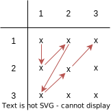
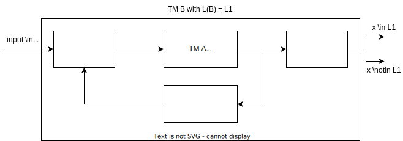
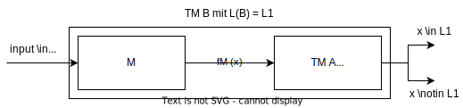

Computability
Computability is one of the first theories described in computer science. It is used to classify problems into algorithmically solvable and non-solvable problems.
Infinities
At first, we must realize that there are different types of infinity. For example, there are more languages than there are turing-machines: \(|KodTM| < |Pot(\Sigma^*)|\). We know however, that an infinite amount of TMs and an infinite amount of words in the power product exist. Let's start with the following definition. We have the sets \(A\) and \(B\).
- \(|A| \leq |B|\), if an injective function \(f: A \to B\) exists.
- \(|A| = |B|\), if \(|A| \leq |B|\) and \(|B| \leq |A|\) (thus a bijective function exists).
- \(|A| < |B|\), if \(|A| \leq |B|\) and no injective function \(f: B \to A\) exists.
We can make a first observation with the two sets \(|\mathbb{N}| = |\mathbb{N}_{even}|\). One would think that the first set would be bigger, as the second only contains every second number. However, by the above definitions, we find that they are equivalent as the bijective function \(f(i)=2i\) exists.
A set is defined as countable if \(|A|\) is finite, or if \(|A| = |\mathbb{N}|\).
Hilbert Hotel
The hilbert hotel is an intuition to compare finite sets. We assume an infinite hotel where the rooms are enumerated as \(1,2,...\). Now, a new guest arrives, and we want to find a room for this guest. We tell all the current guests that they should move into the room next to theirs (\(i \to i+1\)). Room 1 gets empty, and the new guest can move into this room.
Now, if a bus with an infinite amount of guests arrives, we can now tell all the guests in to the room with double the room number of their current room (\(i \to 2i\)).
Examples of infinities
We have seen that \(\mathbb{N}\) is countable. We can also show that \((\mathbb{N} - \{0\}) \times (\mathbb{N} - \{0\})\) is countable as well. We do this by setting up a matrix where the rows and the columns contain the two sets that are multiplied. We then define a canonical order according to the red arrows. With this order, we can enumerate all values present in said set.

The same way we can also show that \(\mathbb{Q}\) is countable. The rows contain the enumerators, and the columns the dividers.
Diagonalisation
A set that is not countable is the real numbers in the interval \([0,1] = \{x \in \mathbb{R} \mid 0 \leq x \leq x\}\). To prove this, we first define the following table where we enumerate real numbers in said interval.
We define a new entry to the set \(C\) as \(C=0.C_1C_2C_3...\) with \(C_i \neq a_{ii}, c_i \notin \{0,9\}\) for all \(i\). The new entry, however, is not part of the table as it differs on the diagonal \(a_{ii}\) from all other entries (as we defined that \(C_i \neq a_{ii}\)).
Similarly, we define a new table that combines \(w_i \in \Sigma^*_{bool}\) and \(M \in KodTM\). \(d_ij = 1\) if \(M_i\) accepts the word \(w_j\).
We now construct the diagonal language denoted as \(L_{diag}\) is not in \(\mathcal{L}_{RE}\) (the set of recursive languages). The constructed language does not yet exist in the set \(L(M_i)\).
Reduction
Reductions allow us to compare different languages regarding their difficulty. Using the reduction we can say that a certain language is at least as or at most as difficult as some other language. We have discussed two types of reduction: EE (Eingabe zu Eingabe) and R (recursive) reduction. These reductions are related:
Further, \(L \leq_R L^C \Leftrightarrow L^c \leq_R L\). And, if \(L \in \mathcal{L}_{RE}\) and \(L^C \in \mathcal{L}_{RE}\), it follows that \(L \in \mathcal{L}_{R}\).
R-Reduction
The less strong reduction of the two takes and input and moves it through a first turing-machine transforming the input on the alphabet from the first language \(x \in \sum_1^*\). This input is then given to a turing-machine \(A\) that decides on \(L_2\). The output can then either be given to another TM doing some transformation and giving it back to the first TM (recursion), or give it to an (optional) output TM that then outputs the final answer \(x \in L_1\) or \(x \notin L_1\).
The complete turing-machine processes the language \(L_1\) by internally using a turing-machine processing the language \(L_2\).

EE-Reduction
An EE-reduction is similar to an R-reduction, but is more restrictive. The output of the TM \(A\) must not be processed, the output of \(A\) must be the output of \(B\). In this reduction, we are only allowed to modify the input given to \(B\) before giving it to the TM \(A\)

Languages and their properties
In general, we talk about two groups of languages. They define the behaviour of turing-machines that detect the respective language.
- Recursive: The turing-machine will halt on any input either and can thus always decide if a certain input is in the language or not.
- Recursive enumerable: The turing-machine is not guaranteed to halt. It will detect all inputs that are part of the language. But the TM might run indefinitely on inputs that do not belong to the language.
Regarding these language classes, we can also say: \(L \in L_{RE}, L^C \in L_{RE} \Leftrightarrow L \in L_R\).
The universal language is defined as the set of encoded-turing machines with an input, where the turing-machine accepts the given input. \(L_U \notin \mathcal{L}_{R}\), \(L_U \in \mathcal{L}_{RE}\)
The halting problem is similar to the universal language. However, this time we accept all inputs where the turing-machine halts (thus accepts or rejects) \(x\). \(L_H \notin \mathcal{L}_R\), \(L_H \in \mathcal{L}_{RE}\)
The empty language is defined as the set of encoded turing-machines that accept no input. \((L_{empty})^C \in \mathcal{L}_{RE}\), \((L_{empty})^C \notin \mathcal{L}_R\)
The complement of the diagonal language. \((L_{diag})^C \in \mathcal{L}_{RE}\), \((L_{diag})^C \notin \mathcal{L}_{R}\)
The "Post'sche Korrespondenzproblem" (PKP)
The PKP is defined as a pair \((A,B)\) where \(A=w_1,w_2,...\) and \(B=v_1,v_2,...\) with \(A=B\). The problem has a set of building blocks \(w_i\), \(v_i\). By concatenating these blocks, we want to create a pair of string \(A\) and \(B\). The PKP has a solution if there exists \(i_1,i_2,i_3,...\) such that \(w_{i_1}w_{i_2}w_{i_3}... = v_{i_1}v_{i_2}v_{i_3}...\).
Once we found one solution to the PKP, we know that there are an infinite amount of solution, as the same series of blocks can simply be concatenated.
The Modified PKP (MKPK) is quite similar, to the regular PKP, but with a fixed starting word. If a PKP can be decided, a MPKP with the same building blocks can also be decided.
Let's have an example. Our building blocks are: \(((1,1110111,101),(111,1110,01))\). A possible solution to this instance is:
Rice's Theorem
Before we get to rice's theorem, we must define the languages called "semanticaly non-trivial decision problems on turing-machines". Such a language must fulfill the following conditions:
- \(\exists \text{ TM } M_1 \text{ with Kod}(M_1) \in L\)
- \(\exists \text{ TM } M_2 \text{ with Kod}(M_2) \notin L\)
- For two turing-machines \(A\) and \(B\), \(L(A)=L(B)\) implies \(\text{KodTM}(A) \in L \Leftrightarrow \text{KodTM}(B) \in L\)
The first two conditions make sure that the language \(L\) is non-trivial (it does not contain all TMs, but is not empty either).
Rice's theorem tells us that "all semanticaly non-trivial decision problems on turing-machines cannot be decided" and thus any such decision problem \(\text{Kod}_L \notin \mathcal{L}_R\).
Kolmogorov-Complexity
It is impossible to algorithmically compute the Kolmogorov-complexity \(K\) for any \(x \in \{0,1\}^*\). This can be further extended: in case the output of the \(K\) function is in binary form (\(\{0,1\}^*\)), we can say that \(K\) is not completely recursive.
A completely recursive function \(f: \Sigma_1^* \to \Sigma_2^*\) requires a turing-machine that halts on any input and computes the function \(f\).
This is proven indirectly through a proof by contradiction. Suppose an algorithm \(A\) exists, computing the Kolmogorov- complexity \(K(x)\). Let \(x_n\) be the first word in canonical order with \(K(n) \geq n\). We have a second algorithm \(B_n\) computing the word \(x_n\). \(B_n\) is used by \(A\), and receives \(\lambda\) as an input. Our algorithm looks as follows:
1 2 3 4 5 6 | |
The above described algorithm \(B_n\) has a Kolmogorov-complexity of
Here we have a contradiction, because we originally set \(K(x) \geq n\).